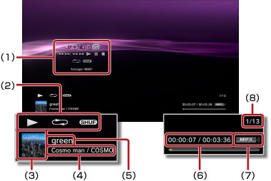

Musik > Verwenden des Bedienfelds
Verwenden des Bedienfelds
Über die Kontrollmenüs auf dem Bildschirm können Sie verschiedene Funktionen ausführen. Die Kontrollmenüs können Sie mit der  -Taste ein- oder ausblenden.
-Taste ein- oder ausblenden.
Lautstärkeeinstellung

Stellen Sie den Lautstärkepegel von Inhalten ein, die unter  (Musik) wiedergegeben werden. Sie können aus neun Stufen auswählen.
(Musik) wiedergegeben werden. Sie können aus neun Stufen auswählen.
Anmerkung
Der Ton ist möglicherweise verzerrt, wenn der Lautstärkepegel zu hoch eingestellt ist. Senken Sie den Lautstärkepegel in diesem Fall.
Visueller Player
Wählen Sie einen Hintergrund aus, der während der Wiedergabe von Inhalten angezeigt werden soll.
Anmerkung
Sie können den Hintergrund in Visueller Player nicht wechseln, wenn Inhalte unter  (Foto) oder
(Foto) oder  (Internet-Browser) angezeigt werden.
(Internet-Browser) angezeigt werden.
Zur Wiedergabeliste hinzufügen
Sie können Inhalte, die wiedergegeben werden, zu einer Wiedergabeliste hinzufügen.
Anmerkung
Nur Musikdateien, die im Systemspeicher gespeichert wurden, können zur Wiedergabeliste hinzugefügt werden.
Löschen
Sie können Inhalte, die wiedergegeben werden, löschen.
Anmerkung
Nur Musikdateien, die im Systemspeicher gespeichert wurden, können gelöscht werden.
Anzeigen
Status- und andere Informationen können während der Wiedergabe angezeigt werden. Welche Informationen angezeigt werden, hängt von den wiedergegebenen Inhalten ab.

(1) |
Kontrollmenüs |
|---|---|
(2) |
Status-Icon |
(3) |
Titel-Icon |
(4) |
Interpretenname/Albumname |
(5) |
Titelname |
(6) |
Verstrichene Titeldauer/Gesamtdauer |
(7) |
Codec |
(8) |
Titelnummer/Gesamtzahl der Titel |
Zurück
Wechseln zurück zum Anfang des aktuellen oder des vorherigen Titels.
Weiter
Wechseln zum Anfang des nächsten Titels.
Schneller Rücklauf/Schneller Vorlauf
Schneller Vor- bzw. Rücklauf der gerade wiedergegebenen Inhalte. Wenn Sie die  -Taste gedrückt halten, erfolgt so lange ein schneller Vor- bzw. Rücklauf der Inhalte, wie Sie die Taste gedrückt halten.
-Taste gedrückt halten, erfolgt so lange ein schneller Vor- bzw. Rücklauf der Inhalte, wie Sie die Taste gedrückt halten.
Wiedergabe
Die Wiedergabe der Inhalte wird gestartet.
Pause
Die Wiedergabe wird vorübergehend unterbrochen.
Stopp
Die Wiedergabe wird gestoppt.
Wiederholung
Inhalte werden wiederholt wiedergegeben. Mit der -Taste können Sie einen von drei Wiederholmodi auswählen.
 |
Wiederholte Wiedergabe eines Inhaltselementes. |
|---|---|
|
Wiederholte Wiedergabe aller Inhalte. |
| Keine Anzeige | Die wiederholte Wiedergabe ist deaktiviert und alle Inhalte werden der Reihe nach wiedergegeben. |
Shuffle-Wiedergabe
Inhalte werden in willkürlicher Reihenfolge wiedergegeben.